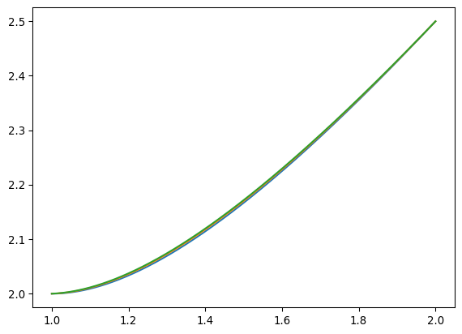

\(\displaystyle 2 x^{3} - 2 y^{3}{\left(x \right)} + 6 y{\left(x \right)} + \frac{d^{2}}{d x^{2}} y{\left(x \right)} = 0\)
Basic Newton solver
We study the equation
with boundary conditions \(y(1) = 2\), \(y(2) = 5/2\).
The solution can be obtained analytically:
\(\displaystyle y{\left(x \right)} = x + \frac{1}{x}\)
Test
\(\displaystyle 0\)
The discretized equation is
\(\displaystyle 2 {x}_{i}^{3} - 2 {y}_{i}^{3} + 6 {y}_{i} + \frac{{y}_{i + 1} + {y}_{i - 1} - 2 {y}_{i}}{h^{2}} = 0\)
with the boundary conditions
\(\displaystyle {y}_{0} - 2 = 0\)
and
\(\displaystyle {y}_{N - 1} - \frac{5}{2} = 0\)
The jacobian is
\(\displaystyle \frac{1}{h^{2}}\)
\(\displaystyle - 6 {y}_{i}^{2} + 6 - \frac{2}{h^{2}}\)
\(\displaystyle \frac{1}{h^{2}}\)
Discretization in numpy.
Numpy: 0.3255600929260254jax version
Test:
Computing jax version:
JIT:0.08923578262329102
(Array(2.803668, dtype=float32),
Array(2.9785662, dtype=float32),
Array(2.8036675, dtype=float32),
Array(2.9785662, dtype=float32))module @jit_getFJ attributes {jax.uses_shape_polymorphism = false, mhlo.num_partitions = 1 : i32, mhlo.num_replicas = 1 : i32} {
func.func public @main(%arg0: tensor<500xf32>, %arg1: tensor<500xf32>) -> (tensor<500xf32> {jax.result_info = "result"}) {
%cst = stablehlo.constant dense<2.500000e+00> : tensor<f32>
%c = stablehlo.constant dense<499> : tensor<i32>
%cst_0 = stablehlo.constant dense<6.000000e+00> : tensor<f32>
%cst_1 = stablehlo.constant dense<-2.000000e+00> : tensor<f32>
%cst_2 = stablehlo.constant dense<2.000000e+00> : tensor<f32>
%cst_3 = stablehlo.constant dense<4.000000e-06> : tensor<498xf32>
%0 = stablehlo.slice %arg1 [2:500] : (tensor<500xf32>) -> tensor<498xf32>
%1 = stablehlo.slice %arg1 [0:498] : (tensor<500xf32>) -> tensor<498xf32>
%2 = stablehlo.add %0, %1 : tensor<498xf32>
%3 = stablehlo.slice %arg1 [1:499] : (tensor<500xf32>) -> tensor<498xf32>
%4 = stablehlo.broadcast_in_dim %cst_2, dims = [] : (tensor<f32>) -> tensor<498xf32>
%5 = stablehlo.multiply %4, %3 : tensor<498xf32>
%6 = stablehlo.subtract %2, %5 : tensor<498xf32>
%7 = stablehlo.divide %6, %cst_3 : tensor<498xf32>
%8 = stablehlo.slice %arg0 [1:499] : (tensor<500xf32>) -> tensor<498xf32>
%9 = stablehlo.multiply %8, %8 : tensor<498xf32>
%10 = stablehlo.multiply %9, %8 : tensor<498xf32>
%11 = stablehlo.broadcast_in_dim %cst_2, dims = [] : (tensor<f32>) -> tensor<498xf32>
%12 = stablehlo.multiply %11, %10 : tensor<498xf32>
%13 = stablehlo.slice %arg1 [1:499] : (tensor<500xf32>) -> tensor<498xf32>
%14 = stablehlo.multiply %13, %13 : tensor<498xf32>
%15 = stablehlo.multiply %14, %13 : tensor<498xf32>
%16 = stablehlo.broadcast_in_dim %cst_1, dims = [] : (tensor<f32>) -> tensor<498xf32>
%17 = stablehlo.multiply %16, %15 : tensor<498xf32>
%18 = stablehlo.slice %arg1 [1:499] : (tensor<500xf32>) -> tensor<498xf32>
%19 = stablehlo.broadcast_in_dim %cst_0, dims = [] : (tensor<f32>) -> tensor<498xf32>
%20 = stablehlo.multiply %19, %18 : tensor<498xf32>
%21 = stablehlo.slice %arg1 [0:1] : (tensor<500xf32>) -> tensor<1xf32>
%22 = stablehlo.reshape %21 : (tensor<1xf32>) -> tensor<f32>
%23 = stablehlo.subtract %22, %cst_2 : tensor<f32>
%24 = stablehlo.broadcast_in_dim %23, dims = [] : (tensor<f32>) -> tensor<1xf32>
%25 = stablehlo.dynamic_slice %arg1, %c, sizes = [1] : (tensor<500xf32>, tensor<i32>) -> tensor<1xf32>
%26 = stablehlo.reshape %25 : (tensor<1xf32>) -> tensor<f32>
%27 = stablehlo.subtract %26, %cst : tensor<f32>
%28 = stablehlo.broadcast_in_dim %27, dims = [] : (tensor<f32>) -> tensor<1xf32>
%29 = stablehlo.add %7, %12 : tensor<498xf32>
%30 = stablehlo.add %29, %17 : tensor<498xf32>
%31 = stablehlo.add %30, %20 : tensor<498xf32>
%32 = stablehlo.concatenate %24, %31, %28, dim = 0 : (tensor<1xf32>, tensor<498xf32>, tensor<1xf32>) -> tensor<500xf32>
return %32 : tensor<500xf32>
}
}